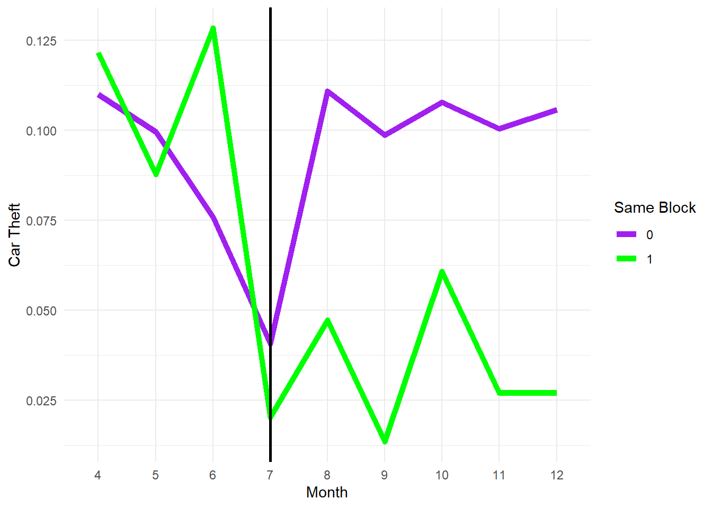

library(tidyverse) # For ggplot, %>%, mutate, filter, group_by, and friends
library(haven) # For loading data from Stata
library(broom) # For showing models as data frames
library(fixest) # For fast, nice, fixed effects regression
library(modelsummary) # For side-by-side regression tables
library(kableExtra)
# This turns off this message that appears whenever you use summarize():
# `summarise()` ungrouping output (override with `.groups` argument)
options(dplyr.summarise.inform = FALSE)
# Load terror data
terror <- read_stata("data/MonthlyPanel.dta") %>%
# The attack happened on July 18. The authors omitted data from July 19-31, so
# all July observations are from before the attack. Make a new indicator
# variable `after` to mark if the row is from before or after the attack
mutate(after = mes > 7) %>%
# There are some weird months in the data like 73. Filter out anything > 12
filter(mes <= 12) %>%
# Rename some columns to be more readable
rename(same_block = institu1,
distance = distanci,
car_theft = totrob,
month = mes,
block = observ) %>%
# Create indicator variables for the distance of each block to a synagogue
mutate(one_block_away = ifelse(distance == 1, 1, 0),
two_blocks_away = ifelse(distance == 2, 1, 0),
more_than_two_away = ifelse(distance > 2, 1, 0)) %>%
# Make these factors/categories
mutate(block = as.factor(block),
month = as.factor(month),
same_block_factor = as.factor(same_block))In 2004, Rafael Di Tella and Ernesto Schargrodsky published a study that analyzed the effect of increased police presence on crime. You looked at this study previously in your threats to validity assignment. To measure this effect, Di Tella and Schargrodsky leveraged a quasi-experiment. Following a synagogue bombing in Buenos Aires, Argentina on July 18, 1994, extra municipal police were assigned to protect synagogues around the city. The increase of police patrols on some city blocks, but not others, means that there is arguably a treatment group and control group for increased police presence, which Di Tella and Schargrodsky used to measure the effect of extra police on car thefts.
The dataset I’ve provided (MonthlyPanel.dta) is a Stata data file nearly 10,000 observations. It comes directly from Di Tella and Schargrodsky’s data appendix available at their study’s AER webpage. This is non-experimental data that includes counts of car thefts for every city block in Buenos Aires from April to December 1994. There are 12 variables:
observ(we’ll rename toblock): The ID number of the blockbarrio: The barrio (neighborhood) for the blockcalle: The street for the blockaltura: The street numberinstitu1(we’ll rename tosame_block): Indicator variable marking if there’s a Jewish institution on the block (1 if yes, 0 if no)institu3: Indicator variable marking if there’s a Jewish institution within one block (1 if yes, 0 if no)distanci(we’ll rename todistance): Distance to the nearest Jewish institution, measured in blocksedpub: Indicator variable marking if there’s an educational building or embassy on the block (1 if yes, 0 if no)estserv: Indicator variable marking if there’s a gas station on the block (1 if yes, 0 if no)banco: Indicator variable marking if there’s a bank on the block (1 if yes, 0 if no)totrob(we’ll rename tocar_theft): Total number of car robberiesmes(we’ll rename tomonth): Month
1. Research design
Imagine you went out and collected data on the presence of police in each city, and the amount of crime in each city, and found a positive relationship. Does this mean police cause crime? Explain.
- Just because there is a positive relationship between police presence and crime in each city does not mean that police are the cause of the crime. Police presence may very well caused by the amount of crime, or both could be caused by something else entirely. Without other data, it is not possible to show causation between crime and police presence. Looking at trends overtime and assessing the comparability of the cities may strengthen or weaken the relationship.
Di Tella and Ernesto Schargrodsky explore this question with a difference-in-difference design. They collected data on both the presence of police and car robberies in Buenos Aires city blocks both before and after the attack. Their interest is in seeing whether the extra police reduced the amount of car theft. How is this data suitable for a diff-in-diff design? What would we be comparing here? Be specific about the pre/post treatment/control groups.
- This data is suitable for a diff-in-diff design because the researchers can compare the difference in amount of car thefts both before and after police presence was increased, and compare them to the blocks where police presence was unchanged. The pre-treatment groups are the data from different blocks before the change. The post-treatment groups are from after the change. The treatment group is the blocks where police presence was increased and the control group are blocks where the police presence did not change.
Why does it help the researchers that the police were dispatched to certain blocks because of terrorist attacks?
- It is helpful that the change in police presence was initiated because of terrorist attacks because terrorist attacks are not directly related to car theft. Had the change been in response to an increase in car theft or something similar, it would be more difficult to argue that police presence had an impact on theft and not the other way around. Because the change was unrelated to the indicator measured, there is a better case for causation. Additionally, the “certain blocks” were determined by their proximity to a Jewish institution, which is also not correlated with car theft. This situation created optimal treatment and control groups for observational analysis.
2. Trends
One of the most crucial assumptions for difference-in-differences designs is the idea that the trends in the treatment and control groups need to be parallel prior to the intervention or program. Why?
- The trends of the treatment and control groups must be parallel before the treatment for diff-in-diff to have validity. The assumption relies on the idea that if the trends were parallel before the intervention, it is likely they would have continued in that manner without intervention. It follows then, that the difference in the change from what was expected is the impact of the intervention.
Create a plot that shows the average number of car thefts per month for blocks with synagogues and blocks without (Hints: it’ll be easiest if you make a smaller dataset using group_by() and summarize() and then plot that smaller dataset with ggplot() Make sure you group by month and same_block_factor. Add group = same_block_factor as an aesthetic so the line goes across the categorical months on the x-axis). Add a vertical line (geom_vline(xintercept = "7")) in the month where the terror attack happened.
What would you say about the parallel trends assumption here? Does it hold up? Maybe? Maybe not?
- The parallel trends assumption does not hold up very well. Before the intervention the treatment groups had unstable trends going down and then way up and then way down. However, the control group has a steadier downward slope until the intervention, when it shot way back up. (It seems, if anything, the intervention increased car thefts in the non-treated blocks. This would make sense since would-be car thieves would have know about the increased police presence and avoided stealing cars near synagogues, and instead steal them elsewhere, perhaps in the control areas.)
# Make a plot here
terror %>%
group_by(month, same_block_factor) %>%
summarize(theft = mean(car_theft)) %>%
ggplot(aes(month, theft, group = same_block_factor, color = same_block_factor)) +
geom_line(linewidth = 2) +
geom_vline(xintercept = "7", linewidth = 1) +
scale_color_manual(values = c("purple", "green")) +
labs(x = "Month",
y = "Car Theft",
color = "Same Block") +
theme_minimal()
3. Difference-in-differences by hand-ish
Calculate the average number of car thefts in the treatment and control groups before and after the attack. (Hint: group by same_block and after and find the average of car_theft.)
# Calculate average of car_theft across same_block and after
blocktheft <- terror %>%
group_by(same_block, after) %>%
summarize(thefts = mean(car_theft))
print(blocktheft)# A tibble: 4 × 3
# Groups: same_block [2]
same_block after thefts
<dbl> <lgl> <dbl>
1 0 FALSE 0.0816
2 0 TRUE 0.105
3 1 FALSE 0.0895
4 1 TRUE 0.0351A <- blocktheft %>%
filter(same_block == 0, after == FALSE) %>%
pull(thefts)
B <- blocktheft %>%
filter(same_block == 0, after == TRUE) %>%
pull(thefts)
C <- blocktheft %>%
filter(same_block == 1, after == FALSE) %>%
pull(thefts)
D <- blocktheft %>%
filter(same_block == 1, after == TRUE) %>%
pull(thefts)
noblock_diff <- B - A
block_diff <- D - C
noblock_diff [1] 0.02313766block_diff [1] -0.05439189diff <- block_diff - noblock_diff
diff[1] -0.07752956Calculate the difference-in-difference estimate given these numbers.
| Before attack | After attack | Difference | |
|---|---|---|---|
| Block without synagogue | 0.0815703 | 0.104708 | 0.0231377 |
| Block with synagogue | 0.089527 | 0.0351351 | -0.0543919 |
| Difference | -0.0775296 |
Answer these questions (you don’t have to write your answers in list form—a paragraph is fine:
- How did car thefts change from before-to-after in blocks without synagogues?
- In the blocks without synagogues, the mean of car thefts rose by 0.0231377.
- How did car thefts change from before-to-after in blocks with synagogues?
- In the blocks with synagogues, the mean of car thefts fell by 0.0543919.
- What’s the difference-in-differences?
- The difference-in-difference is -0.0775296.
- What does that mean? Interpret the finding.
- Assuming that the car theft trends were parallel prior to the increase of police presence, this means that the impact of the increased police presence caused a -0.0775296 change in car thefts. However, since the trends were not parallel, and in all likelihood, the thefts simply occurred in the control areas instead.
4. Difference-in-differences with regular OLS
Run a regression model to find the diff-in-diff estimate of the effect of the increased police presence (after) on car thefts (car_theft) (hint: remember that you’ll be using an interaction term).
# Code here
model <- lm(car_theft ~ same_block * after,
data = terror)
my_gof <- tribble(
~raw, ~clean, ~fmt,
"nobs", "N", 0,
"r.squared", "R2", 2)
modelsummary(model,
output = "kableExtra",
estimate = "{estimate}{stars}",
statistic = "statistic",
gof_map = my_gof,
title = "Diff-in-Diff",
fmt = 5) %>%
row_spec(c(1,3,5,7,9), background = "#f7fabe")| (1) | |
|---|---|
| (Intercept) | 0.08157*** |
| (19.55654) | |
| same_block | 0.00796 |
| (0.39205) | |
| afterTRUE | 0.02314*** |
| (4.13469) | |
| same_block × afterTRUE | −0.07753** |
| (−2.84734) | |
| N | 7884 |
| R2 | 0.00 |
How does this value compare with what you found in part 3 earlier? What is the advantage of doing this instead of making a table?
- This value is the same as the the value I found doing it manually. The advantage to using this method instead of making a table is that there is no math or cacluations to do manually. All it needs is the two variables in a regression, and it does all the calculations automatically.
5. Difference-in-differences with fixed effects OLS
The diff-in-diff coefficient you found in part 4 is accurate, but the standard errors and \(R^2\) are wrong (run glance() on your model object to see how tiny the \(R^2\) is)! This is because of a host of mathy reasons, but also because of the DAG. The effect of increased police presence is confounded by both month and block, but all we’ve really adjusted for binary before/after (for month) and binary synagogue/no synagogue (for block). By reducing these confounders to just binary variables, we lose a lot of the variation across months and blocks.
To fix this, run a diff-in-diff model that includes two additional control variables: block + month.
Warning: this will be incredibly slow! There are 876 blocks and 9 months, and R is finding estimates for each block and month, and the math to do that is complex. Every time you knit this document, R will rerun the model, which takes 5-10 seconds, and the delay when knitting can be annoying. If you want to speed this up across knitting sessions, add the option
cache=TRUEto the chunk options for this chunk. R will store the results in a temporary file and won’t re-run the model if the data hasn’t changed.
Don’t use tidy to view the results. You’ll get a table with almost 900 rows and it’ll take up pages and pages of your knitted document. If you really want to see the results, filter out the block and month rows (like this:).
tidy(name_of_model) %>%
filter(!str_starts(term, "month"),
!str_starts(term, "block"))# Code here with block + month in the model
# DON'T RUN tidy() or modelsummary() without filtering out month and block coefficients
model2 <- lm(car_theft ~ month + block + same_block * after,
data = terror)
tidy(model2) %>%
filter(!str_starts(term, "month"),
!str_starts(term, "block"))# A tibble: 4 × 5
term estimate std.error statistic p.value
<chr> <dbl> <dbl> <dbl> <dbl>
1 (Intercept) 0.0157 0.0770 0.204 0.839
2 same_block NA NA NA NA
3 afterTRUE NA NA NA NA
4 same_block:afterTRUE -0.0775 0.0259 -2.99 0.00278That slowness is miserable. You can get around that by using a different function for OLS that has built-in support for fixed effects (or indicator variables). The feols() (fixed-effects OLS) function from the fixest package lets you include indicator variables in regression in a more sophisticated way. The math is lighting fast, and the coefficients for each block and year are hidden by default (though you can still see them if you really want).
The syntax for feols() is the same as lm(), but with a slight change to accommodate the fixed effects. Use the | character to specify a section of the formula that contains the fixed effects:
model_name <- feols(car_theft ~ same_block*after | block + month,
data = terror)One more cool thing that feols() can do that normal lm() can’t is provide robust standard errors. There is systematic variation within blocks and across time, and we can mathematically account for that variation in the standard errors of the regression. (If you’ve ever used Stata you do this with reg y x, robust). If you ever want to use robust and/or clustered standard errors with regular OLS regression in R, check out the lm_robust() function in the estimatr package. With feols(), you can add an argument to tidy() to get the robust standard errors.
# Stata's default robust SE algorithm is called "Huber-White standard errors",
# and we can get those same numbers here. Look at the documentation for
# summary.fixest() for more robustness and clustering options
tidy(model_name, se = "white")Phew. Now that you know about feols() and robust standard errors, build a model that finds the diff-in-diff effect that includes fixed effects for block and month. Show the results with tidy() using Huber-White standard errors.
# Code for model A + use tidy() to show Huber-White robust standard errors
model3 <- feols(car_theft ~ same_block * after | block + month,
data = terror)
tidy(model3, se = "white")# A tibble: 1 × 5
term estimate std.error statistic p.value
<chr> <dbl> <dbl> <dbl> <dbl>
1 same_block:afterTRUE -0.0775 0.0224 -3.46 0.000552In the original study, the authors also considered the effect of two other treatment variables. Maybe the extra police presence in blocks with synagogues reduced car thefts not just for those blocks, but areas 1 block away or 2 blocks away.
Run two more models. In the first, keep the same_block*after interaction term and add another diff-in-diff interaction for one_block_away*after. In the second, keep the same block and one block interaction terms and add one more diff-in-diff interaction for two_blocks_away*after
# Code for models B and C + use tidy() to show Huber-White robust standard errors
model4 <- feols(car_theft ~ same_block * after +
one_block_away * after | block + month,
data = terror)
tidy(model4, se = "white")# A tibble: 2 × 5
term estimate std.error statistic p.value
<chr> <dbl> <dbl> <dbl> <dbl>
1 same_block:afterTRUE -0.0801 0.0226 -3.55 0.000391
2 afterTRUE:one_block_away -0.0133 0.0139 -0.956 0.339 model5 <- feols(car_theft ~ same_block * after +
one_block_away * after +
two_blocks_away * after | block + month,
data = terror)
tidy(model5, se = "white")# A tibble: 3 × 5
term estimate std.error statistic p.value
<chr> <dbl> <dbl> <dbl> <dbl>
1 same_block:afterTRUE -0.0808 0.0229 -3.52 0.000432
2 afterTRUE:one_block_away -0.0140 0.0145 -0.967 0.334
3 afterTRUE:two_blocks_away -0.00218 0.0123 -0.177 0.859 Recreate columns A, B, and C from Table 3 from the original article with modelsummary(). You’ll need to show the results from your three feols() models (with one interaction term, with two interactions, and with three interactions). You can tell the table to show robust standard errors like the authors did in their original study by including the se = "white" argument, and you can control how many digits are used with the fmt (format) argument (the original article used 5 decimal points, so you can too). You can add significance stars by including stars = TRUE.
modelsummary(list(models, go, here),
se = "white", fmt = "%.5f", stars = TRUE)modelsummary(list("A" = model3, "B" = model4, "C" = model5),
se = "white",
fmt = "%.5f",
gof_map = my_gof,
stars = TRUE,
title = "All Models") %>%
row_spec(c(1,3,5,7), background = "#f7fabe")| A | B | C | |
|---|---|---|---|
| same_block × afterTRUE | −0.07753** | −0.08007*** | −0.08080*** |
| (0.02351) | (0.02361) | (0.02394) | |
| afterTRUE × one_block_away | −0.01326 | −0.01399 | |
| (0.01456) | (0.01509) | ||
| afterTRUE × two_blocks_away | −0.00218 | ||
| (0.01239) | |||
| N | 7884 | 7884 | 7884 |
| R2 | 0.20 | 0.20 | 0.20 |
| + p < 0.1, * p < 0.05, ** p < 0.01, *** p < 0.001 |
Answer these questions: (again, you don’t have to keep this in list form when you answer):
- Does having extra police reduce thefts on the same block? Is the effect significant?
- Having more police significantly reduced thefts on the same block.
- Does having extra police reduce thefts one block away? Is the effect significant?
- Having more police did not significantly reduce thefts one block away.
- Does having extra police reduce thefts two blocks away Is the effect significant?
- Having more police did not significantly reduce thefts two or more blocks away.
6. Translate results to something more interpretable
According to the third model, having additional police on a block caused a reduction of 0.081 car thefts per month on average. What the heck does that even mean though? This whole outcome variable is weird anyway—it’s the average number of thefts per block per month, and most block-months have 0 thefts. Having a number like 0.081 doesn’t quite represent the proportion of crime or anything logically interpretable or anything. It’s a little hard to talk about.
To fix this, we can talk about percent changes instead. Recall from past classes (like microeconomics or GRE prep questions) that you can calculate the percent change (or growth) between two numbers with this formula:
\[ \text{percent change} = \frac{\text{new} - \text{old}}{\text{old}} \]
You can remember this as NOO, for new minus old divided by old. With treatment and outcome groups, you can find the percent change because of a program or policy by using treatment as “new” and outcome as “old”.
Imagine if after some program, the treatment group had an outcome of 3 while the control group had an outcome of 6. The percent change in outcome because of the causal effect of the program is \(\frac{3 - 6}{6}\), or -0.5:
(3 - 6) / 6[1] -0.5This means that this fake program caused a 50% reduction in the outcome.
Find the percent change in car thefts because of the increase police presence after the July terror attack using the results from Model C.
To do this, you need two numbers:
- the average number of thefts in control blocks after the attack, and
- the average number of thefts in treatment blocks after the attack.
Because you’re using Model C, your control group includes blocks that don’t have synagogues within two blocks.
Use group_by() and summarize() to calculate the average number of thefts after the attack in control blocks (Hint: this will be just like the diff-in-diff by hand table you made in section 3, but instead of grouping by same_block, group by more_than_two_away).
blocktheft2 <- terror %>%
group_by(more_than_two_away, after) %>%
summarize(thefts = mean(car_theft))
A1 <- blocktheft2 %>%
filter(more_than_two_away == 1, after == FALSE) %>%
pull(thefts)
B1 <- blocktheft2 %>%
filter(more_than_two_away == 1, after == TRUE) %>%
pull(thefts)
counter <- B1 + (-0.08080)
counter[1] 0.02705398Subtract the diff-in-diff effect for “same_block × after” from Model C from the average in the control group to find the average number of car thefts in treatment blocks. (Note: It’ll be really tempting to just look at the table for the average for treatment + after, but this won’t be right! You need to use control + diff-in-diff, since that’s the counterfactual.)
Finally, calculate the percent change in car thefts after the terror attack across treatment and control blocks (hint: the answer is in the third full paragraph on p. 123 of the original article).
(counter - B1) / B1[1] -0.749161